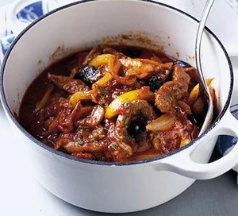

Italian Beef Stew

Hearty Beef Stew - quick and easy with few ingredients
Ingredients
- Beef Strips - approx 300g
- 1 Onion
- 1 Garlic Clove
- 1 Yellow Pepper
- 1 Can Chopped Tomatoes
- Rosemary
- Black Olives
Steps
- Fry Onion for 5 minutes and then add Garlic as turning soft. Tip in Beef Strips, Pepper, Tomatoes and Rosemary and bring to the boil
- Simmer for 15 minutes until meat is cooked through. Then add Olives